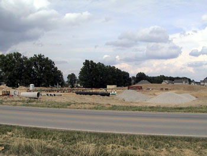

html>
August 2002
August 2002
[ Home ]
[ Daily Log ]
[ 2003 ]
[ December 2002 ]
[ November 2002 ]
[ October 2002 ]
[ September 2002 ]
[ August 2002 ]
[ July 2002 ]
30 August 2002
I thought more about the foundation today, and I think the exterior walls they set up yesterday are for the fence around the
mechanical equipment that sits outside. Anyway, they poured that foundation today, as well as places for the outside light
poles.
18 September 2002...Now that I have seen the drawings again, I realized that it was not the foundation for the light poles.
It was the footer for the four columns for the entry ways on either side of the buidling.
Home
29 August 2002
There must be some more cement to pour around the foundation. They have again set up forms around the building like they
are getting ready to pour some new footers. Maybe the walls that are currently poured are actually inside walls. I don't
know for sure. I am only guessing since I have not seen a set of plans.
Home
28 August 2002
Work continued on the insualtion around the foundation. They were also doing alot of digging, trying to bury pipes, etc. for the utilities
inside the building.
Home
27 August 2002
They are in the process of getting the floor ready for cement. They were digging for utilities today. Also, I see they started with the foam
insulation around the edge of the building.
Home
26 August 2002
All of the cement forms from around the foundation have been removed. I also saw them preparing some wooden forms around items in the
center of the building. This will allow them to pour the floor and leave small openings for the utilities. These voids in the floor will
be filled in later when the utilities have been finalized.
Home
23 August 2002
Work continued on the south wall. Many of the forms had been removed. I also noticed some other ground work in the center of the building
had taken place. I couldn't tell if it was plumbing or other utilities. But they should be working hard on the center now, so that they
can get the floor poured.
Home
22 August 2002
They poured concrete in the south wall today. Given the forecast for rain tomorrow through the weekend, it's a good thing it got done today.
Home
21 August 2002
I am begining to sound like a broken record. We are still waiting on that south wall. I saw the crew out working on it , but there is still no concrete.
Home
20 August 2002
Today they removed the concrete forms from the north half of the chapel. I believe they removed them completely
from the job site, because I didn't notice a huge pile of them. However, the forms along the southern wall, are
still in place. In fact, I believe they still have not poured the concrete for the south wall. Check the picture
on the left for yourself and make your own judgement.
Home
19 August 2002
I guess the work on the foundation takes much longer than I expected. Or, it just seems that way when you measure the progress
every day. As I drove by this morning I did see them out working on the south wall. I don't know if the rain today hampered their
progress, but it was hard to notice any changes since last Friday.
Home
16 August 2002
It's getting harder and harder to tell what work has been accomplished since the previous day. It appears that work
continued on the footers along the south wall of the chapel.
Home
|
|
15 August 2002
When I went by at lunch time today they were just covering over a trench. I guess that it is
for some of the utitlies, though I couldn't tell where the trench came out to the street. I could only see where it
went diaganol across the front lawn and ended up near the nortwest corner of the chapel.
They also began moving the concrete forms to the south side of the chapel. That
means the foundation must be done on the north wall of the chapel.
|
Home

14 August 2002
Work continued on the concrete forms around the footers. It sure takes longer than I thought it would.
Home

13 August 2002
Today it was obvious that they were working on the footers. They have moved the concrete forms around the
footers. I was not able to see around the forms, so I am not sure if they poured concrete or not

Home
12 August 2002
There was no work done over the weekend and I did not notice any activity today.
I am not sure if the rain chased them away, or I just wasn't very observant.
Actually, I suppose we will have many days where we can't tell what work was accomplished.
Home


9 August 2002
Today I noticed some concrete had been poured in some of the footers.
Though as I looked back over the photos from yesterday, they may have actually done that work then.
In the photo on the right you can see some rebar sticking up out of the footers. They all have
orange caps sticking on the end.
Home


8 August 2002
I get the feeling that the recurring theme for the next few days is "they are working on the footers".
They started placing the concrete forms around the footers today. The construction trailer also arived, though
I forgot to take a picture of it.
In case you were wondering... The footers are the foundation.
Home
|
|

7 August 2002
Work continued on the footers. I noticed they were adding the steel reinforcement (rebar) in the trenches.
Also, installation began on the storm drains for the parking lot.
The picture on the right shows the stack of concrete forms. They will use these to hold the concrete to its desired shape while it is drying.
|
Home

6 August 2002
It seems that the footers have all been dug and work has begun digging the trenches for the plumbing.
I also caught a picture of the fire hydrant.
|
|
Home
|
|

5 August 2002
Work has begun in earnest on the footers. Also, more drainage tile showed up today and they began to place it around the site.
|
Home

2 August 2002
Today the leveled the site where the chapel will stand.
Home
1 August 2002
They have been moving around a lot of dirt. You can make out the outline of the chapel and parking lot. They should be digging the foundation soon.

|

|
[ Home ]
[ Daily Log ]
[ 2003 ]
[ December 2002 ]
[ November 2002 ]
[ October 2002 ]
[ September 2002 ]
[ August 2002 ]
[ July 2002 ]
Comments... Questions... Suggestions... Send me a note Fletcher Chambers.


{kind=link}
{kind=link}
{kind=link}
{kind=link}
{kind=link}
{kind=link}
{kind=link}
{kind=link}
{kind=link}
{kind=link}
{kind=link}
{kind=link}
{kind=link}
{kind=link}
{kind=link}
{kind=link}
{kind=link}
{kind=link}
{kind=link}
{kind=link}
{kind=link}
{kind=link}
{kind=link}
{kind=link}
{kind=link}
{kind=link}
{kind=link}
{kind=link}